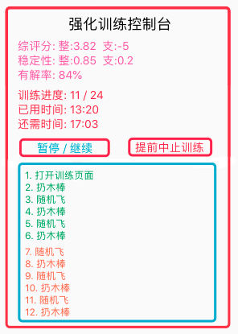
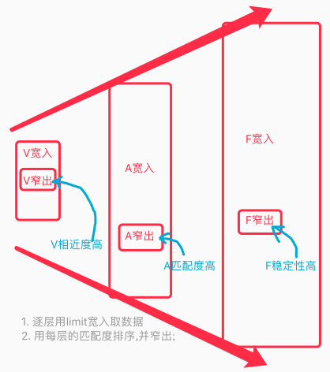

AI系列之《2022.03-04：强化训练与 TC 数据流重整》

来源：HELIX_THEORY/手稿/assets/593_强化训练控制台2.png

来源：HELIX_THEORY/手稿/assets/607_TC数据流逐层宽入窄出示图.png
来源：Note25.md
3 到 4 月，手稿转入强化学习训练、定帧被动感官、单帧输入单模型、TOMVision 工作记忆可视化、强化训练控制台，以及 TC 数据流整理。
强化训练的价值不只是“多跑几次”，而是给系统一个稳定的试错场。定帧与单帧模型让视觉输入从连续世界中被切出可训练的片段；工作记忆可视化则让内部状态可观察，方便定位反省、识别、方案竞争中的错误。
这一阶段还废弃了 fo 的 mv 指向和 P 任务，说明架构开始主动清理早期概念债务。TC 数据流的“整体兼顾与各线竞争”成为关键：系统既要保留全局目标，又要允许不同候选线并行竞争。